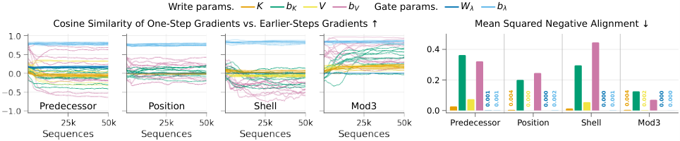

Paper Analysis
01 · Streaming Inference and Streaming Learning
流式推理只要求第 t 步不看未来；模型仍可以先离线训练，在训练时保存多帧计算图。SRM 研究更严格的流式学习：输入依次到来，不存原始经验用于回放，以当前可得反馈更新模型，历史主要压缩在递归状态里。这两个设定不能混用。
设 hₜ=fθ(hₜ₋₁,xₜ)，预测为 gφ(hₜ,xₜ)。完整梯度包含当前参数对当前状态的作用，以及通过 hₜ₋₁ 传来的历史作用：dhₜ/dθ=∂hₜ/∂θ+(∂hₜ/∂hₜ₋₁)(dhₜ₋₁/dθ)。一步 BPTT 将前一状态视作常量，丢掉后一项。
状态的数值可以记住很久，计算图却只保留当前一步。因此晚到的反馈仍能训练“怎么读这个状态”，但不能直接追责很多步以前那次写入。这不是说模型完全学不了长期依赖，而是长期信息必须先被保存，并且可被当前学习过程读出来。
RTRL 用随时间递推的参数敏感度替代历史计算图，可在满足条件时得到完整梯度，但成本往往高。论文强调，多层网络若只追踪各层内部敏感度、忽略跨层历史依赖，其 RTRL 实现仍是近似；不能把所有在线梯度算法都称为精确。
Paper Analysis
02 · Fixed Content-Time Writes and Learned Queries
SRM 的主要状态是矩阵 Hₜ∈R^(dₖ×dᵥ)。其更新 Hₜ=Λ(xₜ)Hₜ₋₁+kₜvₜᵀ：先逐行衰减旧内容，再加入一项 key/value 外积。读取为 qₜᵀHₜ；多头采用不同查询，拼接读取结果。它不是 softmax attention，也不保存一个不断增长的 token 列表。
key 的未归一化形式为 Kₓxₜ+Kₚxₜ₋₁+K꜀cₜ，再归一化到单位范数；value 为 Vₓxₜ+Vₚxₜ₋₁。K、V 投影固定在随机半正交初始化。前一个输入使相邻符号的关联能在写入时就进入状态；cₜ 是固定振荡时钟，为内容增加时间地址。
查询 qₜ=Wq,x xₜ+Wq,c cₜ 可训练。忽略衰减时，qᵀH=Σᵢ⟨q,kᵢ⟩vᵢ：匹配 key 的 value 被读出，其他 key 产生串扰。固定投影有助于保持区别，但有限维随机 key 并非全部严格正交，容量也不是无限的。key 归一化同样不意味着所有写入外积幅值相同，因为 value 的范数仍会变化。
时钟由多个二维旋转组成，不需学习；不同频率区分时间间隔，时钟向量归一化避免压过内容项。附录的语言模型配置用 32 个 rotor，诊断表中则用 8 个，不能将一个配置泛化为全文固定设置。
写入投影固定不等于整个网络输入表征固定。语言模型仍有可学习 embedding 和上下层；更准确的说法是 SRM 单元内部的 key/value 映射固定。对视觉任务，这意味着不能直接宣称采用固定写入就消除了上游特征漂移。
Paper Analysis
03 · Retention and Order-Sensitive State
保留系数采用 λₜ,s=exp(−exp(wλ,sᵀxₜ+bλ,s))，范围在 0 和 1 之间。它按行控制旧信息衰减，不混合行坐标；参数可学习。初始保留率覆盖不同时间尺度，使状态一开始就有长短不同的痕迹。一步训练仅给当前保留操作分配直接信用，不包含它过去每次使用的完整影响。
对角保留矩阵彼此可交换。这里的限制是：对同一份已有状态，交换两个纯对角变换的顺序不会改变它们的乘积；并不是说含新写入、位置和输入依赖的整个网络完全无法感知顺序。
为表示不可交换的操作，SRM 另维护小向量 zₜ=(I−βₜuₜuₜᵀ)zₜ₋₁。uₜ 是固定投影后归一化的轴，βₜ=2sigmoid(wβᵀxₜ+bβ) 可学习；β=2 时为反射，其余规定范围内不扩张范数。不同轴的反射一般不可交换，可表达依次交换位置等状态变化。
H 与 z 不进入对方的更新，只在输出端拼接。把反射施加到 H 上会移动已存 key 的地址，原 query 可能再也找不到它；向 z 不断叠加新内容又会破坏原本的状态追踪。论文用分离实验说明了两类需求为何不宜强行采用同一种递归。
这一结构本身不是本文要直接移植到 LingBot-Map 的模型建议。它展示的是存储稳定性与状态变换能力的不同要求；固定大小的矩阵状态也不能直接换算成几个 Transformer 摘要 token。
Paper Analysis
04 · A Delayed Query and Its Gradient Path

Mohamed Elsayed, Minh Pham, and A. Rupam Mahmood · CC BY 4.0 · Original figure, unmodified · Paper & Caption ↗
教学例子：第 1 步输入 key A，第 2 步输入 value B，随后若干空白，第 10 步问 A 对应什么。第 2 步的 key 投影同时包含 x₂ 与 x₁，因此 (A,B) 的局部关系已经被固定映射写入 H₂。到第 10 步，H₁₀ 的数值仍可能保留这项信息；学习 query 可以让它更接近当时的 key，输出头据此预测 B。
第 10 步 loss 可沿输出头→读取 q₁₀ᵀH₁₀→当前 query 参数回传，也能影响当前一步的 retention。若 H₉ 已 detach，梯度不能沿 H₉→H₂ 回到第 2 步写入。训练仍会更新跨时共享参数，从而改变未来行为，但这不等于恢复了被截断的那条历史信用路径。
原图 3 检查这种局部梯度是否可作为被省略历史梯度的可靠代理。作者固定非读取参数，只训练 query/readout，让 loss 在受控条件下变化；再对被固定的候选写入参数与 gate 参数计算诊断梯度。图左是 10 次初始化的方向一致性，右是负一致性的平方均值。
具体指标 ρ=cos(g_one,g_full−g_one)。比较对象是被省略的历史贡献，而不是含有 g_one 自身的完整梯度，避免人为抬高相似度。作者观察到 retention 的对齐较可靠，写入参数尤其偏置在部分任务和初始化中出现负对齐。这支持其固定写入的选择，但不是对所有任务、所有骨干的一般证明。
这也回答我们的训练问题：语义 loss 若只在当前帧计算，可以教当前语义预测器；若想让未来几何监督直接改变更早的语义写入，就要在训练展开范围内保留相应可微路径，或采用另一个明确的信用分配方法。SRM 没有证明 detach 后未来几何 loss 还能训练过去写入。
Paper Analysis
05 · What the Benchmarks Actually Measure
MQAR 要求记住多对 key/value 并在查询时返回相应 value。本文把标准字母表从 8192 缩到 256，并使用专用等待符号；长度 64/128 分别含 4/8 对。它是适配流式学习后的基准，不宜直接与原始 MQAR 榜单横比。
各配置按每步 FLOPs 近似匹配，包括前向、一步反向与优化器更新；每种设置训练 50000 条序列，报告最后 10% 序列准确率、10 次运行均值。每个查询计算局部梯度，但附录明确在序列结束统一更新参数，所以不能把所有实验都表述为每个 token 立即更新参数。下表为 large 配置。
TinyStories 则确实逐字节更新：词表 256、batch size 1、四个递归块、故事边界重置状态，预测下个字节后才更新。表 2 的 loss 是更新前在线误差，取 10M/20M 字节之前 1M 字节窗口均值，不是独立测试集 perplexity。约 13M 参数下，20M 位置 SRM 为 0.822±0.003，RTU 为 0.892±0.002，KDA 为 0.994±0.009。
训练总体运行到 100M 字节，约为语料的 5%。优化器也显著影响结果：附录对 RTU 的比较中，RMSprop 后期上升，而 StreamingOptimizer 持续下降。不能将所有差异只解释成 memory 结构的作用。
关联 T-Maze 先展示多对 key 与左右动作值，等待 10 步后查询其中一个 key。K=2/4/8 时 SRM 最终在线成功率为 0.998/0.996/0.997；正文 RTU 对应约 0.84/0.67/0.63。这里采用 Stream-AC，并保留参数 eligibility traces；不存在历史激活 BPTT 不等于完全没有跨步学习状态或奖励信用机制。
| Unit | MQAR Length 64 ↑ | MQAR Length 128 ↑ |
|---|---|---|
| GLA | 23.3% | 11.3% |
| KDA | 92.4% | 62.3% |
| RTU | 14.0% | 2.3% |
| eLSTM | 22.6% | 9.6% |
| SRM | 99.1% | 96.9% |
Paper Analysis
06 · Capacity, Ablations, and Qualifications
固定写入消融保持相同状态大小，使 K、V 或它们的偏置可训练。长度 9 的首符号回忆任务中，固定写入表现更好，字母表扩大至 512 时仍相对稳健。该消融并未做 FLOPs 匹配；组件移除实验则把计算预算补回其他组件。这两种控制条件应分别记录。
去掉前一输入投影主要影响相邻关联任务；去掉时钟影响按位置查询；去掉 tracking 状态影响不可交换操作追踪。这比单独看平均分更能说明组件作用。但随机初始化状态在线性 probe 上可解码，不等于模型已能完成任务；其中 Parity 与 Orient 的 probe 还在完整有限总体上拟合与评估，测的是可解码性而非样本外泛化。
参数量匹配尤其不等于运行状态内存匹配。附录 scaling 表中，约 13M 参数的 SRM 总状态约 397K 标量，RTU 约 4.1K，差近两个数量级。SRM 状态不随序列无限增长是成立的结构特征，但这些实验不能支持“同内存更高效”的结论。
逐步训练的硬件利用率也有限。附录估计语言模型每步 RTRL 成本为一步 BPTT 的 6.837 倍，但这是指定 FLOPs 统计口径，不是实测端到端延迟。实验仍是短诊断序列、简单控制与小语言模型，尚未验证大规模视觉流或三维几何。
论文没有给出可验证的作者代码入口，本次检索也未确认正式仓库。因此正文以论文与附录公式、算法为依据；状态初始化、detach 的具体实现与工程吞吐没有进行本地代码复核。
Paper Analysis
07 · What This Changes in Our Memory Proposal
对于写入前语义融合，首要问题不是再增加一个 loss 名字，而是明确哪个参数在什么时刻收到监督。若语义融合后的历史 KV 在帧间 detach，未来几何仍可能利用其中的信息，但它不能直接回到过去的融合操作。这时可主张语义信息被使用，不能声称已由未来几何端到端塑造过去写入。
我们的训练可以继续采用离线连续片段展开、在线因果推理，两者并不矛盾。片段内保留历史梯度，片段边界再截断；报告展开长度及缓存 detach 位置，就能让训练主张与实际机制一致。SRM 的严格在线学习约束不是我们必须接受的前提。
一个有价值的诊断是：固定 forward 历史容量，只改变梯度展开范围，观察未来帧 loss 对语义融合参数的梯度，以及未来几何结果。再加输出端语义融合和非语言教师对照，分离当前帧增强、历史信息保留和历史写入信用分配。这些仍是待做实验。
与 ReConV 的关系也很清楚：ReConV 问摘要保留了什么，SRM 问延迟反馈能训练哪条路径。一个可重建语义的 memory 不一定适合几何，一个含有历史的 state 也不一定能从未来误差学习写入；这两个检验都需要，不能相互替代。
Discussion
Reading Questions
Can detached memory still be useful?
可以。detach 切断历史梯度，不清空状态数值；当前 query 和输出头仍能学习读取已有信息。
Are all SRM parameters frozen?
不是。固定的是单元内 key/value 投影及 tracking 轴映射；query、retention、tracking 强度和外部网络仍可训练。
Is the comparison memory-budget matched?
不是统一按状态内存匹配。不同实验按 FLOPs、参数量或同状态大小控制；约 13M 参数语言模型的 SRM 状态明显大于 RTU。
Does SRM require changing LingBot-Map into a new recurrent architecture?
不需要。最直接的启发是审计训练梯度与 detach，而不是原样替换其历史表示；视觉几何收益仍需实验。
References
- Original Paper ↗
- Submission and Version History ↗
- Related Note: ReConV ↗
- Related Note: Semantic Memory Supervision ↗
One unmodified original figure is included under CC BY 4.0 for scholarly analysis. Results are author-reported; no local reproduction has been performed. Proposed connections to visual reconstruction are analytical, not experimental findings.
Verified on 2026-11-04. Paper results refer to the linked versions. Repository references were checked on this date.